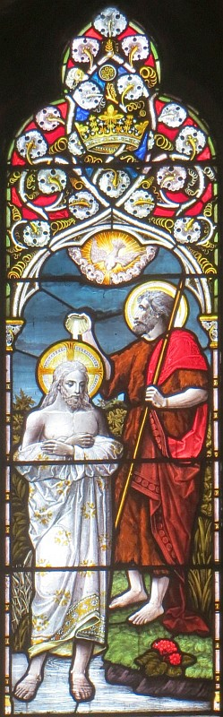

La Bouonne Nouvelle s'lon Mar, Chapitre 1
Lé c'menchement d'la bouonne nouvelle dé Jésû-Christ, lé fis dé Dgieu.
Coumme ch'est êcrit dans lé livre du prophète Esaïe: "Êv'chîn, j'vos env'yie man sèrveux tchi s'en va graie vot' quémîn. La vouaix du chein tchi crie dans lé d'sèrt Griyiz lé c'mîn du Seigneu à seule fîn qu'san c'mîn sait drait."
 Jean vînt et bâptîsait dans lé d'sèrt, en procliâmant un baptême d'èrformâtion pouor la rêmission des péchés.
Jean vînt et bâptîsait dans lé d'sèrt, en procliâmant un baptême d'èrformâtion pouor la rêmission des péchés.
Et v'là tchi v'naient à li toute la contrée d'Judée et touos les cheins d'Jérusalem, et i' 'taient touos bâptîsis par li dans la riviéthe Jourdain, en confêssant lus péchés.
Et Jean 'tait habilyi en pé d'chanmeau, auve eune cheintuthe dé tchui l'tou d'li et i' mangeait des j'vaux d'St. George et du myi sauvage, et i' criait coumme chennechîn: "I' s'en va v'nîn auprès mé, l'chein tch'est pus piêssant qu'mé. Jé n'méthite pon, mé, dé m'baîssi à seule fîn d'lachi lé lachet d'ses soulièrs. J'vos ai bâptîsi auve dg'ieau, véthe, mais li, i' s'en va vos bâptîsi auve lé Saint Esprit."
Et i' s'adonnit qu'à chu temps-là Jésû vînt d'Nazareth en Galilée et Jean l'bâptîsit dans l'Jourdain, et tout drait quand i' sortit dé l'ieau, i' vit les cieux tchi lus divîsîdrent et né v'là l'Esprit tchi d'valit sus li coumme eune colombe, et né v'là eune vouaix tchi vînt du ciel: "Tu'es man fis, l'aimé, et ch'est en té qu'j'ai mîns toute ma jouaie."
Et l'Esprit l'env'yit tout drait dans lé d'sèrt, où'est qu'i' pâssit quarante jours là-bas en enduthant l's êpreuves du Malîn. I' d'meuthait siez les bêtes et l's anges lé souongnaient.
Et quand Jean fut blioutchi, Jésû vînt en Galilée en procliâmant la bouonne nouvelle du rouoyaume dé Dgieu, et i' dit, "Né v'chîn l'heuthe, et l'rouoyaume dé Dgieu est d'amain, èrpentissiz et criyiz la bouonne nouvelle."
Et, en marchant par la mé d'Galilée, i' vit Simon et san fréthe, André, à lanchi un drannet dans la mé i' 'taient des pêtcheurs. Et Jésû lus dit, "V'nez auve mé, et j'm'en vais vos faithe des pêtcheurs d'hoummes."
Et d'un co, il' abandonnîdrent lus drannets et l'suivîdrent.

Et il allit un brîn pus liain et i' vit Jacques, lé fis à Zébédé, et san fréthe, Jean, et i' lus trouvîdrent dans lus baté à r'pather lus drannets. Et tout drait i' l's app'lit, et i' tchittîdrent lus péthe Zébédé dans l'baté auve les hoummes dé journée, et i' lus en fûtent auve li. Et il' arrivîdrent à Capèrnaum au sabbat et il allit tout drait à la sŷnnagogue pouor ensîngni. Et i' fûdrent ravis quand il ensîngnait, car il ensîngnait auve lé saver, pon coumme les êcrivains. Et dans la sŷnnagogue y'avait un houmme auve un mauvais esprit, et i' s'êbriyit, "Fiche-nous l'camp! Tch'est qu'tu t'en vas faithe auve nous, Jésû l'Nazarétchien? T'en vas-tu nos passecrithe? J't'avons r'connu: tu'es l'Saint d'Dgieu!"
Et Jésû l'lichonnit coumme chennechîn, "Tais ta becque et tchitte-lé!"
Et l'mauvais esprit l'châtchit, briyit d'eune grande vouaix, et l'tchittit, et i' fûdrent touos êpaûmis et distchutîdrent entré ieux coumme chennechîn: "Tch'est qu'ch'est? Tch'est qu'est chutte nouvelle ensîngn'gnie? Ch'est-i' qu'il a l'pouver dé c'mander les mauvais esprits qu'i' l'obéïssent!" Et l'brit d'chein qu'il avait fait allit dans tout l'vaîthinné d'Galilée. Et quand i' dêhalîdrent d'la sŷnnagogue, i' lus en fûdrent siez Simon et André, auve Jînmîn et Jean, et la belle-méthe à Simon 'tait sus la cârre, épis i' lî pâlîdrent entouor lyi, et i' vînt au pid d'lyi et la l'vit et prînt sa main et ou fut r'dgéthie dêliêment, et ou s'en fut les souongni.
Et l'sé au couochant, i' lî'am'nîdrent touos les cheins tchi 'taient malades et touos les cheins tch'avaient des mauvais esprits et toute la ville s'assemblyîdrent l'avant à l'us. Et il en r'dgéthit un tas tch'avaient dé difféthents maux, et i' fliantchit hors un fliotchet d'mauvais esprits - mais i' n'allouit pon ès mauvais esprits d'pâler, car i' l'avaient r'connu.
Bein tôt, tandi qu'i' faîthait acouo niet, i' sé l'vit et s'en fut bein au liain dans lé d'sèrt pouor prier. Et Simon et les cheins acanté li allîdrent lé qu'si et i' l'trouvîdrent et lî dîdrent, "Tout l'monde té chèrchent."
Et i' lus dit, "Allons ès villes vaîthinnes, à seule fîn j'piêsse y prêchi étout, né v'là pouortchi qué j'sis v'nu ichîn."
Et i' prêchit dans lus sŷnnagogues, partout Galilée, et fliantchit hors des mauvais esprits. Et un lêpreux vînt à li, et l'app'lit et s'agenouoillit l'avant à li et dit, "S'tu l'veurs bein, tu pouôrras m'èrdgéthi."
Et Jésû eut pitchi d'li, et tendit sa main et lî dit, "Jé l'veurs bein, sai r'dgéthi."
Et un co qu'i' dit chenna, la lêprosie dispathut et i' fut r'dgéthi. Et i' l'renv'yit en lî dithant sècquement, " N'di rein entouor chennechîn à autcheune pèrsonne, mais va siez l'prêtre et fai tout chein qu'i' faut pouor té puthifier s'lon chein qu'Moïse quémandit en têmouongnage."
Et i' s'en fut et c'menchit à caqu'ter et bailli d'sa goule entouor chennechîn, et Jésû n'pouvait d'aut' entrer dans la ville publyiquement et s'en fut dans lé d'sèrt et les gens v'naient à li dé toutes les carres.
Viyiz étout:
- La Bibl'ye
- La Bouonne Nouvelle s'lon Mar: 2
- La Bouonne Nouvelle s'lon Mar: 3
- La Bouonne Nouvelle s'lon Mar: 4, i-xxxiv
- La Bouonne Nouvelle s'lon Mar, Chapitre 4, vèrsets iii-ix
- La Bouonne Nouvelle s'lon Mar, chapitre 4, vèrsets 35-41
- La Bouonne Nouvelle s'lon Mar: 5
- La Bouonne Nouvelle s'lon Mar: 6
- La Bouonne Nouvelle s'lon Mar: 7
- La Bouonne Nouvelle s'lon Mar: 8
- La Bouonne Nouvelle s'lon Mar: 9
- La Bouonne Nouvelle s'lon Mar, Chapitre 9, vèrsets 1-13
- La Bouonne Nouvelle s'lon Mar: 10
- La Bouonne Nouvelle s'lon Mar, Chapitre 11, vèrsets 1 à 11
- Lé mithacl'ye du fidgi s'lon Mar
- La Bouonne Nouvelle s'lon Mar: 11
- La Bouonne Nouvelle s'lon Mar: 12
- La Bouonne Nouvelle s'lon Mar: 13
- La Bouonne Nouvelle s'lon Mar: 14
- La Bouonne Nouvelle s'lon Mar, Chapitre 15
- La Bouonne Nouvelle s'lon Mar, Chapitre 16